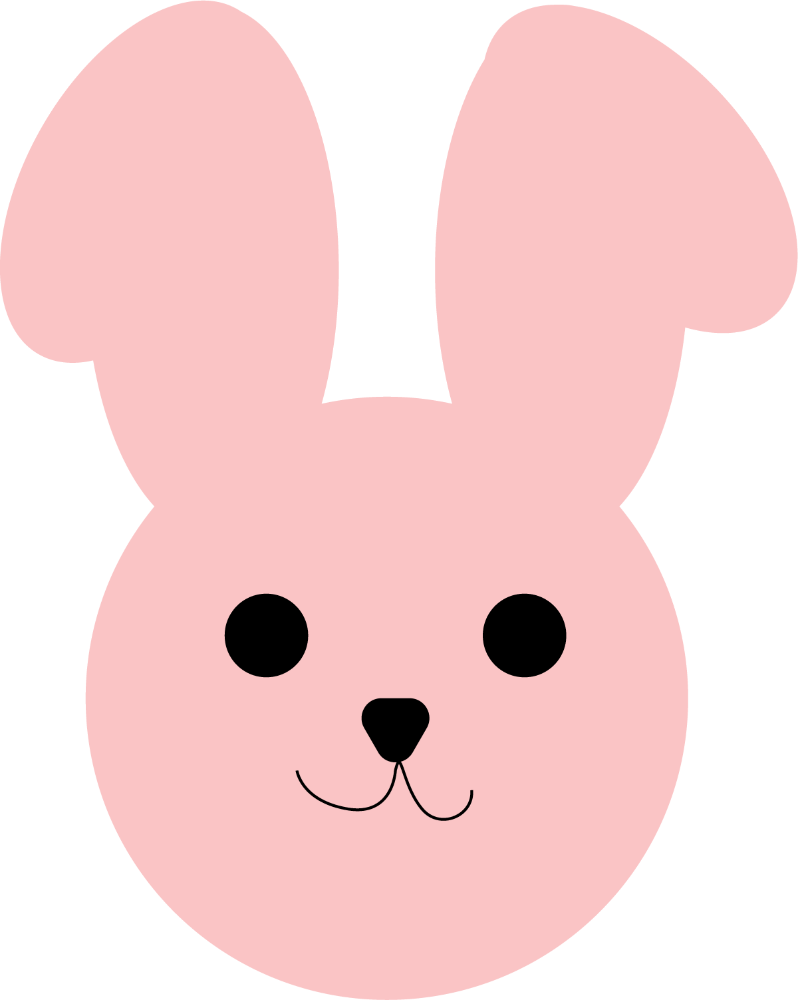
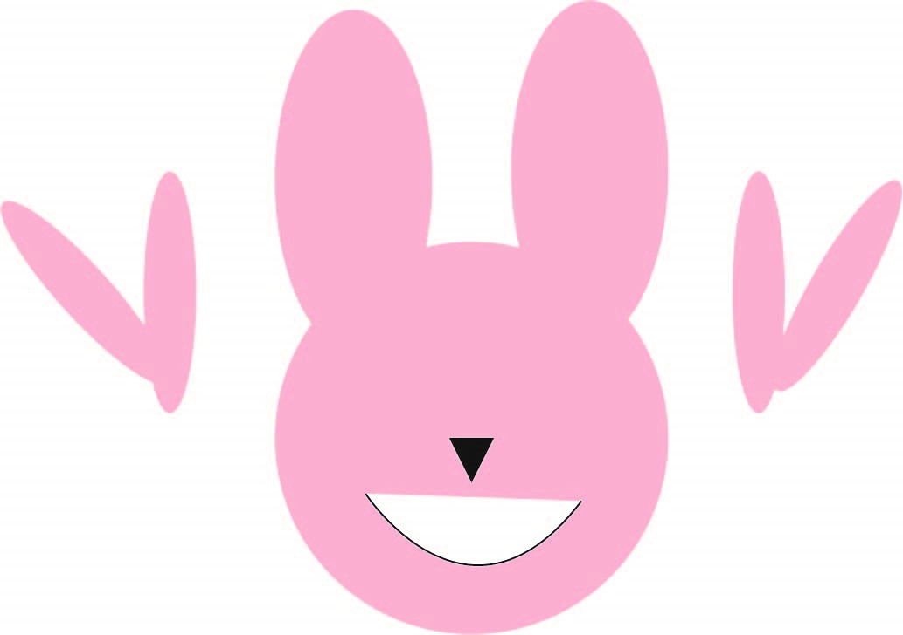

Open Adobe Illustraitor
Click "Create New..."
Create an 11' x 8.5' document
We'll be making a bunny, so on the screen make a cirle thats 3in x 3in and color it #FAC4C5
Next create an oval of the same color for the ears. After making that hold Alt and click + drag the shape to duplicate it. The oval should be 1.2in x 2.6 in. Drag it to the other side of the head.
Make 2 more ovals that are 1in x 1.9in of the same color and rotate one of them by it 330°.
Do the same as the step before and hold Alt and click + drag to another side.
For the other oval, rotate it to 42.88°, and put it on the other oval to make half lopped ears.
Next, make 2 black circles sized at 0.4177in x 0.4177 in. put them on the head to make eyes
for the nose, make sure the color is also black. Go to the star tool and click somewhere on the screen. Set the points to 3 and click and drag on the screen to make an upside down triangle. Size it to 5.4057in x 0.3393in. click the direct selectin tool to round the corners.
For the mouth, use the pen tool and make sure its on stroke. Under the nose, make a little U shape that goes to one side, and then repeat that to the otherside.
Save this
Export this!
Send it to me through slack or at my school email akwakye@masonlive.gmu.edu.
Original Drawing
Gilan's Attempt
